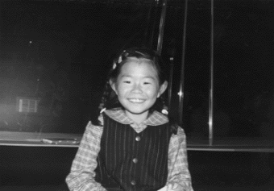

これが噂のナルシー石井
99.3.3（水）
・A2版対応のコピー機が三階美術ルームに導入される。
・高橋さんが「デジタルグラフィックスウェーブ」なるイベントに出席するため長野へ。
・履歴書の写真が上目使いだったため、最近はナルシー石井と呼ばれている制作の石井君。某作画スタッフがからかうつもりで彼の似顔絵を描いて手渡すも、「いやだな～」と言いつつ自分の机の正面に貼るナルシーぶりを発揮している。
99.3.4（木）
・久しぶりに色打ち合わせ。シーン8-3、15-2。という分けで、動画供給不足は相変わらず。内線作監斎藤氏に、神村氏がはっぱをかけまくる。
・で、上がってきたのは1CUT1500枚を超える新記録重量級CUT。こりゃ外注さんには出せないわな。社内で作業することに。
・鈴木プロデューサーが、昨日から韓国に出張中。
・ウグイスの映像資料をさがしていたら、初台にある日本野鳥の会のショップで、ＮＨＫから出ている「野鳥百選」というビデオを発見。ここではバラ売りしていなかったので、渋谷のＮＨＫショップに電話で在庫を確認して取りに行こうと思ったら閉店時間に間に合わず。しょうがないので、取り置99.3.5（金）
二時より若林さん、伊藤さんが来社し、効果音の打ち合わせが行われる。アビッド上で今までに出来上がったフィルムをビデオに起こし、必要な効果音等にチェックを入れながら話し合い。
99.3.6（土）
二時半より、浜町のテレビセンターにて、のぼる役五十畑迅人君のアフレコが行われる。収録はスムースに進み、高畑監督もたいへん気にいった様子。本来は、のの子の声も録る予定だったのだが、役の子の体調不良にて、五十畑君一人の収録となる。

▲演技を見守る高畑監督(中央)と若林さん(右)。
後ろでカメラを構えているのはテレマンの浦谷さん
99.3.9（火）
・今日から鈴木プロデューサーが「ホーホケキョ・となりの山田くん」全国行脚の旅に出発。
・のぼるの声をアビッドに取り込む作業を始めるが、サーバーがパンク寸前なので、フィルム出力ができるように色が付いているCUTから優先的に取り込み、高畑監督のチェックを受けている。
・シーン13-5の色打ち合わせ。
99.3.10（水）
・夜、高橋、神村、居村、川端、田中が金魚鉢に集まり、今後のスケジュールをどの様すれば立ち直らせることが出来るのか、をテーマに会議が行われる。システムが複雑すぎて、どの作業を優先的に進めると効率的なのか、議論が別れ激論となる
・動画が今週に入ってから綱渡り状態。実線・内輪作監にもっと出してもらうようにお願いする。
・矢野顕子さんの主題歌「ひとりぼっちはやめた」が完成。高畑監督がメインスタッフに聴いてもらおうと提案、早速会議室で試聴会が開かれる。評判はすこぶる良い。
99.3.11（木）
・夕方に35mmラッシュチェックが行われる。高畑さんから再び以前見たものと色が違うのではないか、と疑問が出される。前見たフィルム等を見ながら検討会。
・居村氏が奥さんの体調不良の為、今日は11時に帰る。最近は毎日帰りが2時、3時になっていたが、よく考えてみれば一応新婚家庭だったのね。
・昨日の催促が効いたのか、動画出しが怒涛のごとく流れてきた。神村氏も久しぶりに一息つく。
・動画の真野さんがスタジオIN。
99.3.12（金）
・片塰、田中氏等マニア数人が、昨日からネット上で公開された○ター○ォー○の新予告編をダウンロード。「敵を研究せねば（山田くんと同じく今夏公開）」と言いつつ、興奮しながら何度も鑑賞。
・山田氏作打ち。シーン14-5。
・近藤勝也氏来社。高橋さん等と様々な打ち合わせ。
99.3.13（土）
・稲城さんと共にプラハで録音してきたクラシック部分の音楽を高畑さんに聴いてもらう。クラシックには造詣が深い高畑監督なのでちょっと心配だったのだが、おおむね好評でほっと胸をなで下ろす。
・ラッシュチェックが行われる。作業がどんどん流れ出したのと、リテーク分も数多くあるため、かなりの長さになってしまう。
・山田君ではシーンごとに作業を進めなければならない場合が多く、どこがで一CUTでも止まってしまうとそのシーンの作業がストップしてしまうため、神村氏が、歯抜けCUTの一覧表を作り、田辺氏らを筆頭に夜な夜な「CUT出してくださ～い」と耳元でささやいている。
99.3.15（月）
・シーン5-2、3-2後半部分の色打ち合わせ。
・定例の制作会議でラッシュチェックのあり方を考えようと提案があり。
・田辺さん、怒濤のように11cutの原画チェック。神村氏へ自慢げに「どうです」と言ったら「止めてある歯抜けを先に下さい」と逆襲される。
・門屋さんが米林氏に、大ファンである○○○のサイン入り写真集をプレゼント。米林氏は「今の僕には、これくらいしかできませんから精一杯がんばります」と深夜まで必死に動画を描いていた。
99.3.16（火）
・午後から読売新聞の取材が入る。
・35mmフィルムによるラッシュチェックが行われる。前回色が違うのではないか、との疑問が出された35mmだが、それはポジフィルムの選択を間違えた、という単純ミスが原因であったことが発覚、一同胸をなで下ろす。
・神村氏が今後の予定を聞きに大塚伸治氏と会いに行く。
・プラハで録音した、本来は本編では使用せず、ＣＤ用となるはずのオーケストラバージョンの主題歌が、とても面白く仕上がっているので、高畑さんが本編に使おうと、試しにアビッド上で絵と合成している。
99.3.17（水）
・今日から鈴木さんが再び出張。
・高畑監督が書いた絵巻の研究本「12世紀のアニメーション 国宝絵巻物に見る映画的・アニメ的なるもの」が完成、3月23日には書店に並ぶ予定。絵巻の本というと、堅苦しいものを想像しがちだが、この本はカラー図版も多く、今のマンガやアニメとの関連性も分かりやすく解説してある。とてもお勧めの一冊。

・川端、神村両氏がジブリに残っていた「もののけ姫」のセルを倉庫へ運ぶ。
99.3.18（木）
・高橋、百瀬両氏とマッドハウスへ行く。年末までビデオ版マスターキートン等を作っていて大忙しの高坂さんと話し合う。忙しい中、時間をさいて古屋、清水両氏がボブスレー編を手伝ってくれることに。本当にありがたい。
・大塚さんから追加原画OKの返事。それを受け、神村氏が残り原画の振り分け案を作成し、高畑監督に手渡す。高畑監督は、田辺氏と深夜まで会議室で話し合っていた。
・タイムコードが入れられるS-VHSデッキを購入し、アビッドに接続。古城氏も大喜び。これで効果の作業もスムースに運ぶはず。
99.3.19（金）
・高畑監督と田辺氏がとりあえず三人の原画マンを一人づつ会議室に呼び、残りの振り分けとスケジュールの説明を行う。
・夕方からプロジェクターによるラッシュチェックが行われる。
・明日ののの子、のぼるの残りのアフレコに向け、最新バージョンのライカリールをアビッドからビデオに落とす。
99.3.20（土）
・赤坂の三分坂スタジオにて、一時半からのの子とのぼるの残りのアフレコが行われる。はずだったのだが、直前になって、昨日アビッドから落としたビデオの映像と音声がずれていることが発覚、急遽、のぼる役の五十畑君とのの子役の宇野なおみちゃんには別室に待機してもらい、ジブリでアビッドから再びビデオに落とす作業に入る。全部落としていると当然一時間半以上かかってしまうので、半分でき上がったところで、石井君にビデオを持ってジブリを出発してもらい、残りは約45分後に QAR部の小野田君に持ってきてもらう。そのかいあって何とか3時過ぎにはアフレコ作業を開始する事が出来る。しかし、このままでは作業がかなり遅くまでかかってしまうと危惧されたが、宇野なおみちゃん、五十畑君とも実に感じを出してのの子とのぼるを演じきってくれたため、厳しい高畑監督も次々とOKを出し、予定よりも早く、七時過ぎにはすべてのアフレコが終了する。

99.3.22（月）
・休日だが今日もみな出勤。
・夕食時、制作部恒例、半年に一度の「食べるレジャー」ツアーが行われる（単に1000円焼き肉食い放題でストレスを発散するだけなのだが…）。
・フィルムによるラッシュチェックが行われる。今回も色について若干気になる点が出る。タイミングを変えて焼き直し。
99.3.23（火）
・荒井さん、石迫さんとともに、東銀座にある松竹へ、来週から荒井さんと私が出発する、全国映画館巡りの打ち合わせに行く。二人で六月初旬までに、260館以上の映画館に足を運ぶ予定。
・昨日の深夜、突然斎藤さんから13-7.8の処理が変更になったことを聞く。このシーンは、常に暗い状態ではあるが街灯とかバイクのライトとか何かしらの光があり、それによって顔とかに薄い照り返し等のグラデェーションがかかるという。しかし現行のシステムだとそれを表現することは難しいので、顔をマスクで区切りその中に背景で描いた絵を入れようと言う事になる（分かり辛いなこりゃ）。
・二時から音楽打ち合わせ。決めることが多く、四時間ほどかかってしまう。
99.3.24（水）
・次の日曜日に近藤勝也氏の結婚式が都内某結婚式場にて行われることになっているのだが、「となりの山田くん」のなかに出てくる結婚式のシーンのSEをそこで録ることになり、サウンドリング伊藤さんと電話で打ち合わせ。
・某氏が地方巡業？に出る為、神村氏が以前田中直哉氏から買ったモバイルギアを貸すことに。某氏は早速10円メールに申し込み用意万端整えていたが、持ち主の神村氏は「私だってまだ入会していないのに…」とぶつぶつ。
・安藤氏、映画最後のシーン、16-2の作打ちが行われる。
・商品部浅野氏が社内某女史と結婚を発表、と言ってもすっぱ抜いたのは最初に本人達に話を聞いた宮崎監督。深夜ジブリに来て、先に結婚することが決まっている某氏を「結婚するのはおまえだけではないのだ」といじめていた。
99.3.25（木）
・14時からマッドハウスの清水、古屋両氏の作打ちが行われる。神村氏、作打ちの日付を忘れていたため、大慌て。
・16時からプロジェクターによるリテーク分ラッシュチェックが行われる。
・18時からフィルムによる本撮分ラッシュチェックが行われる。今日は問題もなく終了し一堂胸をなで下ろす。
・20時から山田氏シーン7-1の作画打ち合わせが行われる。
・と言うわけで、今日は二時間おきに何かしら打ち合わせやらチェックがあったため、制作は一日中バタバタ。
99.3.26（金）
・神村氏が、動画作業をもっとスムースに進行させるため、1.似た様なシーンであれば、着彩ボード無しで斉藤氏が内線作業に入る。2.新たなシーンの場合は、実線動画が上がったものの着彩ボード作業を最優先する。等の作戦をさらに徹底させる。これによって若干今までより手直しが増えると思われるが、効率はこちらの方が上と判断。
・世界中を何年かにわたって放浪していた経験を持つ旅好きの制作石井君が、「全国をまわれるなんて良いですね」と全国巡業をしきりにうらやましがっている。今の日曜日もない生活を少しでも脱出したいという気持ちも分かるけど…。
99.3.27（土）
・夜に田辺さんから「高速道路を走ると回りにどんなものが目に入るのか確認したい」との要望があったので、田辺さんを車に乗せ、調布インターから新宿まで、中央自動車道～首都高のドライブに出かける。制限速度お構いなしで煽ってくる暴走トラックを無視し、回りの景色が見やすい速度で運転。それにしても噂の○ールドの看板の数はすごい。
99.3.28（日）
・目黒雅叙園において近藤勝也氏の結婚式が行われる。鈴木プロデューサー、高畑監督、宮崎監督等が出席して行われた披露宴では、効果の伊藤氏が録音機材を持って参加、「となりの山田くん」の劇中で使われる披露宴シーンのSE録りが行われる。
99.3.29（月）
・田中氏、今日から出張。まずは中国地方へ旅立つ。
・川端さんもジブリ展の視察の為出張。
99.3.30（火）
・予定していたボブスレー編のラッシュチェック中止。
・音楽作業用に、ニューヨークにいる矢野さんへほぼ完璧なライカリールを送るため、古城はアビッドで2時まで作業。
・その古城氏を家まで送った神村氏が、帰りにスリップ事故。鈴木プロデューサーからのお下がりであるシビックシャトルをおしゃかにする。
99.3.31（水）
・シーン1-1、1-3色打ち合わせ
・夕方よりフィルムでのラッシュチェック。取り合えず無事終了。
| 次のページへ |
| 日誌索引へ戻る |